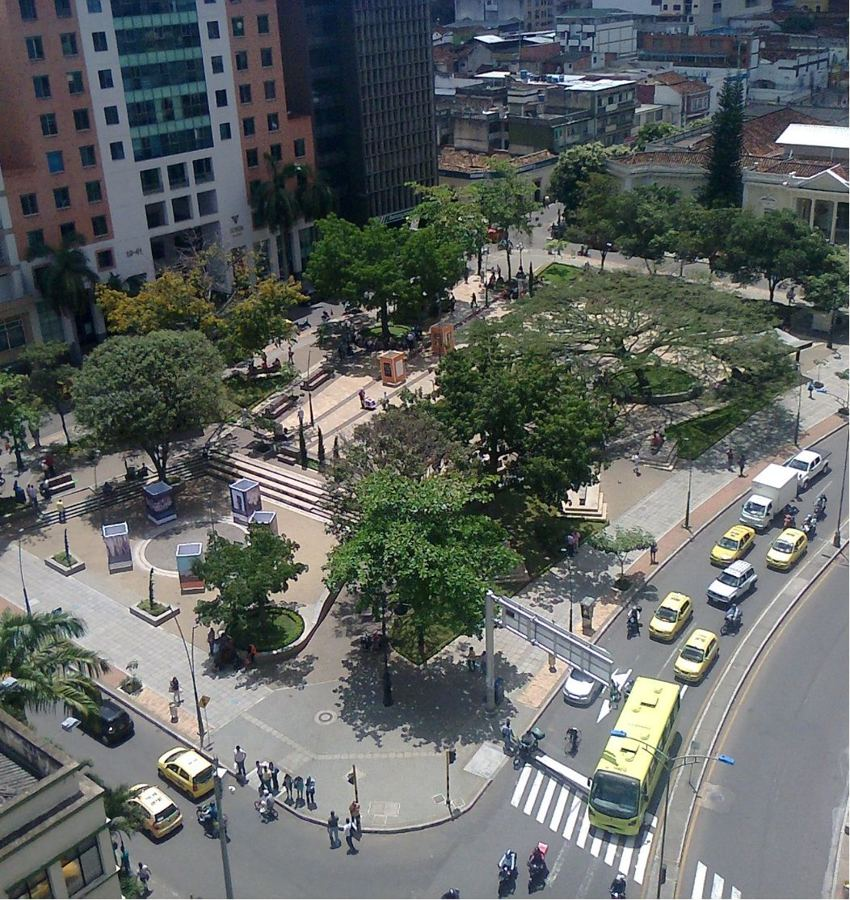
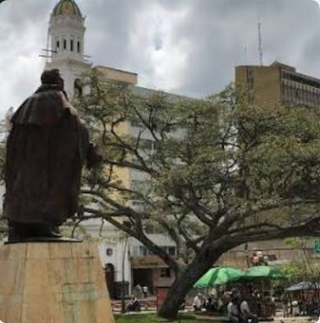
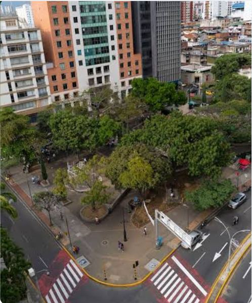
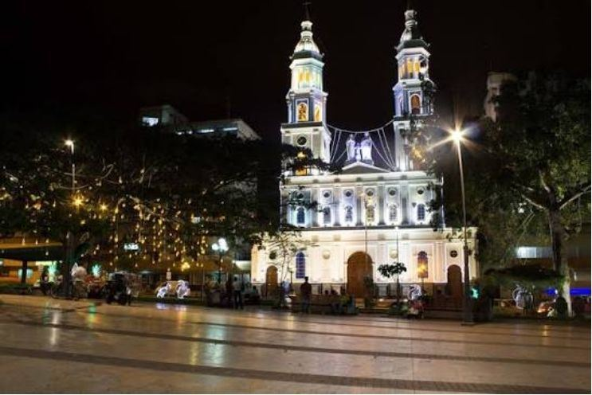
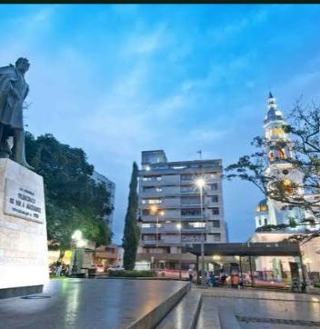
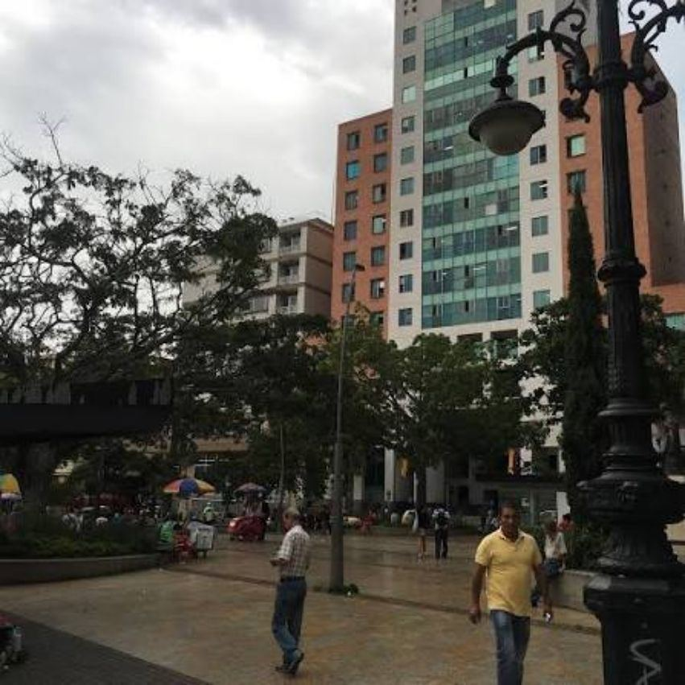
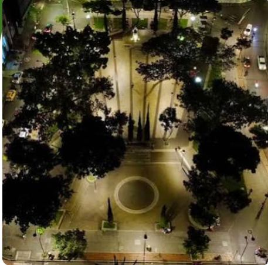
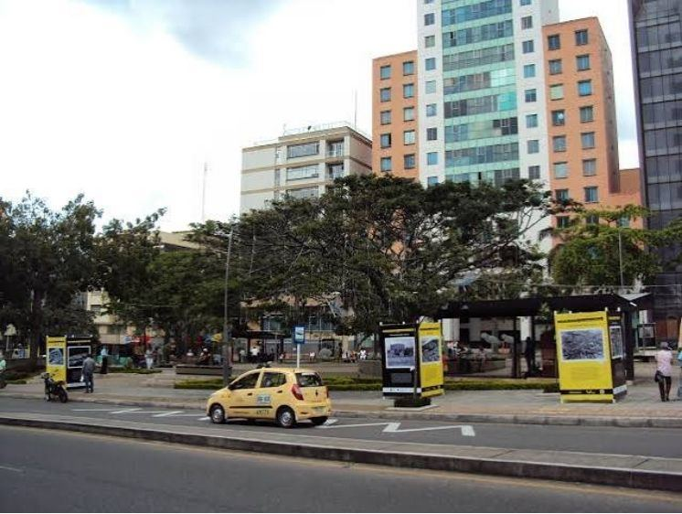

A volunteer campaign for environmental awareness in the public park of Santander, Bucaramanga, Colombia. Join us to protect our shared spaces.
Become a volunteerLearn about the problem
Our campaign aims to reduce litter and promote environmental responsibility through community participation.
Public parks are places for recreation, exercise, family activities and community interaction. When they are clean, everyone can enjoy them. Taking care of them is a shared responsibility.

A clean park is everyone's responsibility.
Public parks matter to our city, but litter is damaging them and the experience of the people who use them.


Waste left in parks makes them less pleasant and less welcoming for families, athletes and neighbors. It also harms the environment and shows that we need better waste-disposal habits and more recycling. Solving it starts with awareness and community action.
We work in three steps. Every step has a place for you.
Create posters and flyers, share environmental messages and provide recycling information. Use trash bins and separate recyclable materials.

Talk with park visitors, explain the campaign, share flyers, invite volunteers and promote responsible behavior. We also run a recycling activity, environmental questions and community participation games.

With gloves, garbage bags, recycling containers, posters and flyers, we collect litter, separate waste, recycle materials and clean the park.

Join a clean-up day and bring a friend. We provide gloves and bags.
Share this website and our messages with family, classmates and neighbors.
Gloves, garbage bags, recycling containers, posters and flyers are always needed.
Come to our activities in the park and learn how to recycle correctly.

A cleaner and more pleasant park for everyone.
Do you want to volunteer, donate or ask a question? Write to us and we will reply with the date of the next activity.
Email: brayhansteven.guerrero@ustabuca.edu.co
Location: Public park of Santander, Bucaramanga, Colombia
Project: English III, Sustainable Development, Universidad Santo Tomás